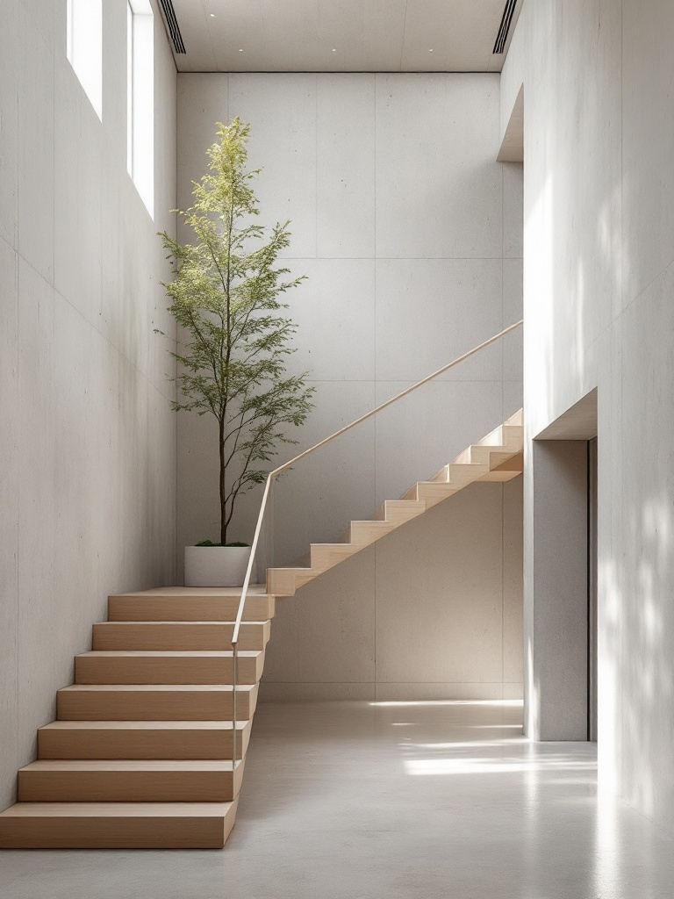

Buildings that hold the light.
A seven-person Copenhagen studio working in concrete, oak and north light - houses, cultural buildings, and interiors built to be lived in slowly.

Our own workshop - board-formed concrete, a borrowed tree, and the north light we build everything around.
A small studio that builds quietly, and finishes things.
Atrium Nord is seven people. The principal you meet at the first sketch is the one who walks the site on the last day. No account layer, no hand-off.
We work the way the city does - in concrete and oak, around daylight, at a human pace. Every project starts with the section before the plan, and with the question of how a room feels at four o'clock in February. We take on a handful of commissions a year so each one gets the attention it was hired for.
We rebuilt the studio's own site on one platform.
The old site was a premium WordPress theme drowning in nine plugins - and the project pages, the whole point, took nearly five seconds to show a single photograph. We moved to SGEN: one stack, every drawing served light.
Four ways we work - under one accountable roof.
From the first measured survey to the day the keys turn. No drawings thrown over a wall, no contractor we've never met.
Architecture
New houses, extensions and cultural buildings - from feasibility and planning through to detailed design and site.
Learn more →Interiors
Considered interiors that read as one piece with the architecture - joinery, light and material specified in-house.
Learn more →3D & visualisation
Photoreal models and walkthroughs so a room can be judged at four o'clock in February before a wall is poured.
Learn more →Furniture
A small line of made-to-order oak pieces, drawn for our projects and available to take home from them.
Learn more →Our realisations
Seven people, one studio.
No account layer, no hand-off. The person you meet is the person who does the work.
Sets the section before the plan. Walks every site.
Joinery, light and material. Specifies it all in-house.
Details and delivery. Where the drawing meets the pour.
Builds the models that let us judge a room early.
Questions we're often asked
How do we start a project with you?
It begins with a conversation and a site visit - no fee, no commitment. If it's a fit, we propose a feasibility stage that ends in a measured brief, a section, and a clear scope before any design fee is agreed.
What size of project do you take on?
From a single considered room to a 2 500 m2 cultural building. We deliberately keep a handful of commissions live at once so every one gets a principal's attention - if we can't give yours that, we'll say so and recommend someone who can.
Do you work outside Copenhagen?
Most of our work is within an hour of the studio, which is how we keep walking sites. We take selected commissions across Denmark and southern Sweden where the brief is right and the travel makes sense for both of us.
Can you handle planning and the contractor too?
Yes. We run planning applications in-house and stay on through construction as your representative on site - one accountable studio from the first sketch to the day the keys turn.
Let's sit down and talk about your space.
Tell us about the site, the budget and the feeling you're after. We'll come back within two working days - and the first conversation is always on us.
Or speak to us directly - +45 33 44 55 00
Studio open Mon-Fri 9-17 - Ryesgade 42, 2200 Kobenhavn N